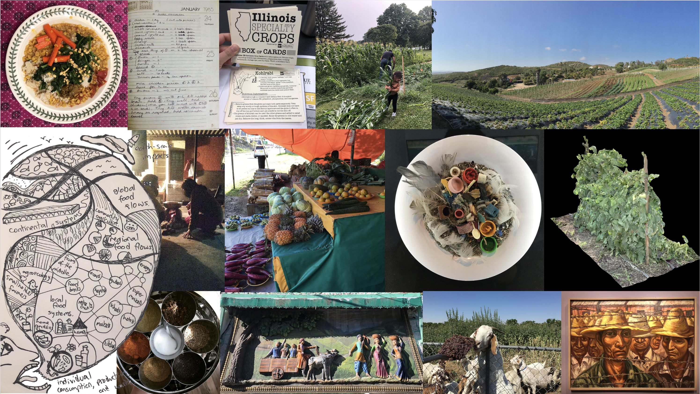
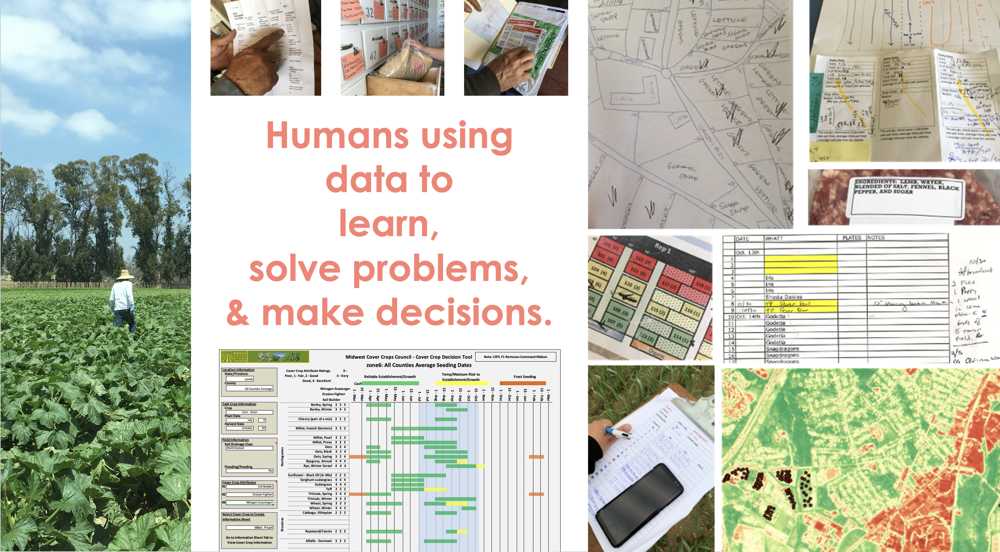
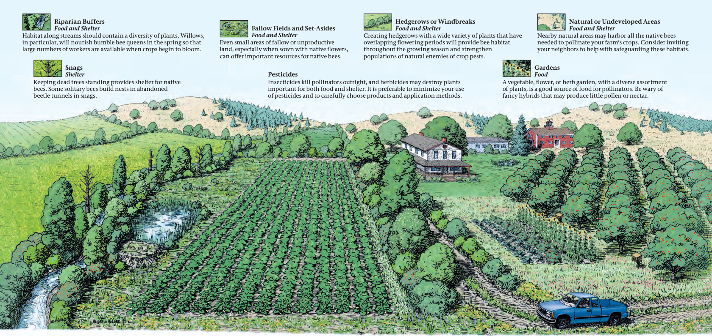
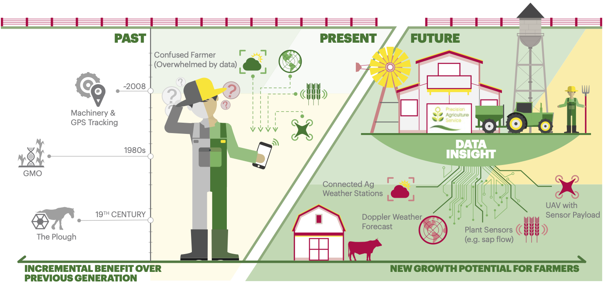
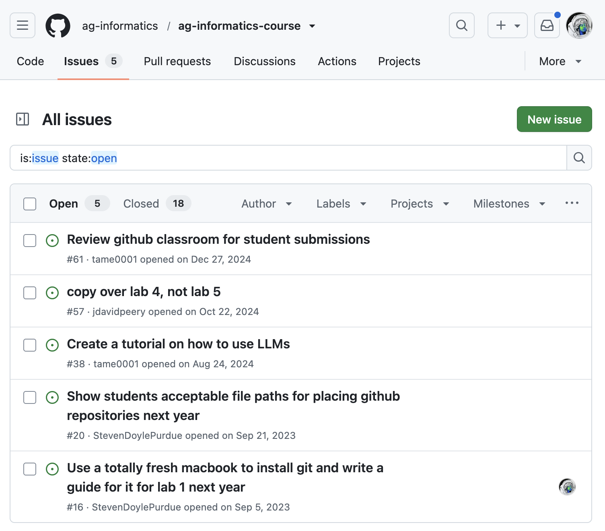
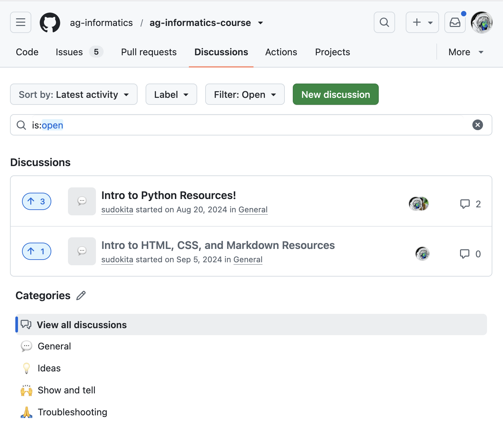

Intro to Ag-Informatics
Module 1 - Web Fundamentals
Lecture 1.1
ASM 532, Intro to Ag Informatics
Ankita Raturi, ankita@purdue.edu
Lecture Outline
- What is agricultural informatics?
- Introductions
- Course overview

Intros
- Name
- Major, degree, department
- Interests in (agri, food, eco, ??) x tech

Field to fork, knowledge work

Knowledge Work
Teasing apart Technology
-
Hardware
- Manipulate the world
- Manipulate reality
- Physical interactions
- Augment human action
-
Software
- Manipulate information
- Manipulate models
- Hypothetical interactions
- Augment human thought
predictive analytics, real-time monitoring, problem diagnosis, decision support, data driven insights, system-level analysis, communication, coordination, and collaboration
Whose digital revolution?

A BIG question
How might we
reponsibly design and
sustainably develop
appropriate digital technologies for
resilient agricultural, ecological, and food systems?
Agricultural Informatics
- Design, build, and use
- digital technologies
- to enable
- people to...
- grow and distribute food,
- manage natural systems,
- coordinate and organize work, &
- strategize for food system resilience.
Teaching Philosophy
Continuous Improvement
Found a bug?

Ideas? Banter?

What will this course cover?
- Start in Brightspace:
All materials listed e.g., course syllabus, schedule, submissions. - Follow links to materials:
e.g., lectures and labs in Github
https://github.com/ag-informatics/ag-informatics-course - Let's check them out...
License
-

Introduction to Agricultural Informatics Course by Ankita Raturi, Purdue University is licensed under a Creative Commons Attribution-NonCommercial-ShareAlike 4.0 International License.
- You are free to:
- Share — copy and redistribute the material in any medium or format
- Adapt — remix, transform, and build upon the material
- Under the following terms:
- Attribution — You must give appropriate credit, provide a link to the license, and indicate if changes were made. You may do so in any reasonable manner, but not in any way that suggests the licensor endorses you or your use.
- NonCommercial — You may not use the material for commercial purposes.
- ShareAlike — If you remix, transform, or build upon the material, you must distribute your contributions under the same license as the original.
- No additional restrictions — You may not apply legal terms or technological measures that legally restrict others from doing anything the license permits.